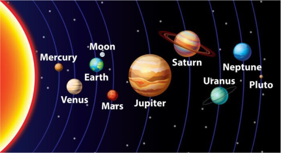
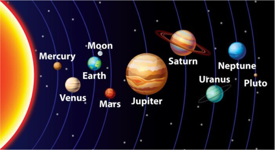
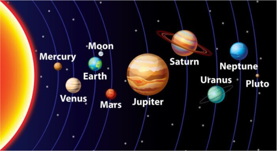

O Sistema Solar é um vasto e fascinante conjunto de corpos celestes que inclui o Sol, planetas, luas e outros objetos. No centro está o Sol, uma estrela de tamanho médio que fornece a luz e o calor essenciais para a vida na Terra.
Ao redor do Sol orbitam oito planetas: Mercúrio, Vênus, Terra, Marte, Júpiter, Saturno, Urano e Netuno. Cada um desses planetas possui características únicas, desde Mercúrio, o menor e mais próximo do Sol, até Júpiter, o maior. Saturno é famoso por seus impressionantes anéis, enquanto Urano e Netuno são conhecidos por suas cores distintas.
Além dos planetas, o Sistema Solar é rico em luas e outros corpos. A Terra tem uma lua, chamada simplesmente de "Lua", enquanto Júpiter possui mais de 70 luas, incluindo Ganimedes, a maior do sistema. Saturno também tem várias luas, como Titã, que é maior que Mercúrio. O Sistema Solar também contém asteroides e cometas que seguem suas próprias órbitas. O Cinturão de Asteroides, situado entre Marte e Júpiter, é uma região notável. Explorar o Sistema Solar nos ajuda a entender melhor o nosso lugar no universo e a complexidade cósmica.
Os planetas do Sistema Solar seguem uma ordem específica em relação ao Sol, começando com os mais próximos: Mercúrio, Vênus, Terra, Marte, Júpiter, Saturno, Urano e Netuno. Mercúrio, o planeta mais próximo, é o menor e tem temperaturas extremas.
Vênus, o planeta mais quente, possui uma espessa atmosfera de dióxido de carbono. A Terra, nosso lar, é o único planeta conhecido a suportar vida. Marte, o planeta vermelho, é um foco de exploração devido às suas semelhanças com a Terra. Júpiter, o maior planeta do Sistema Solar, é famoso por sua Grande Mancha Vermelha, uma tempestade massiva. Saturno é conhecido por seus impressionantes anéis. Urano e Netuno, os gigantes gasosos mais distantes, têm atmosferas de metano que lhes conferem uma cor azul distinta. Essa ordem é crucial para a compreensão da estrutura e dinâmica do nosso sistema planetário.
